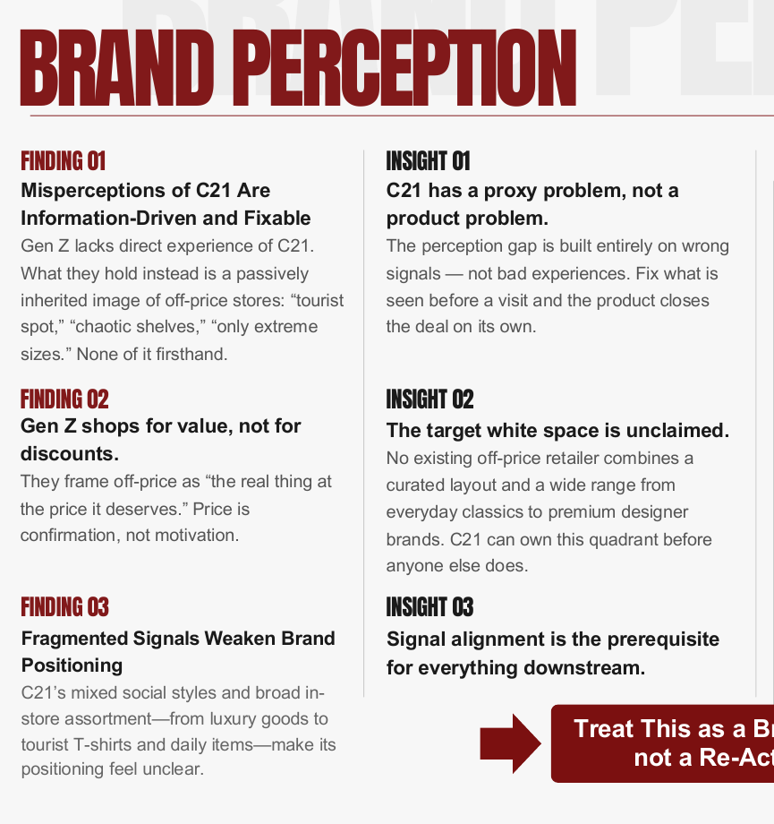
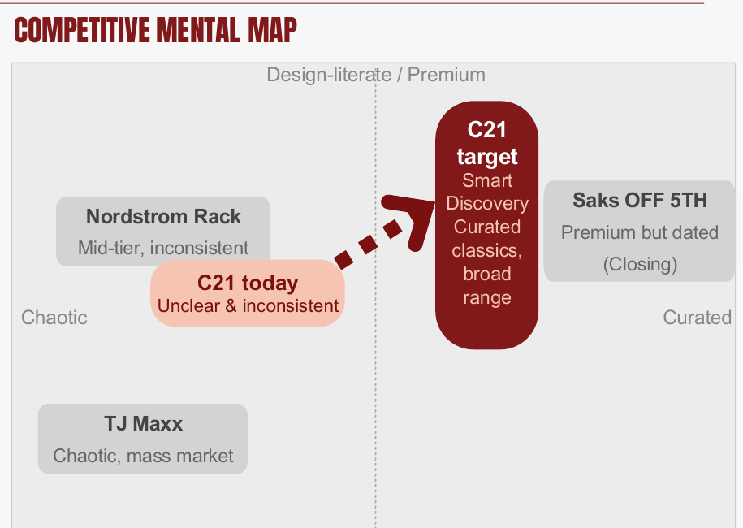
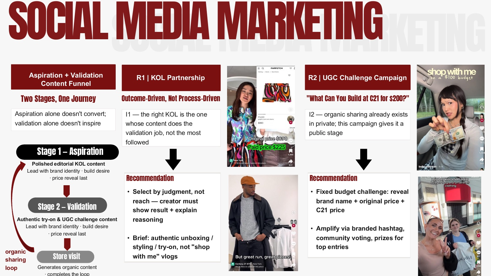

Skillset
我们团队要回答一个问题：怎么把Gen Z和年轻Millennial变成Century 21的到店顾客。
跑了8场深度访谈和7场焦点小组。核心发现很反直觉。Gen Z对C21的负面印象大多不是来自真实体验，多数人根本没进过店，而是来自二手的、过时的信息。对比Nordstrom Rack、Saks Off 5th和TJ Maxx之后，C21实际占据了一个没人认领的位置：广泛选品加策展式发现，这个组合没有竞品拥有。
定位结论很清晰：问题不是修复受损品牌，而是正确介绍一个没人真正了解的品牌。最终定位定为“Good taste. Better price.”，拆出三条执行线。
GEO和AEO策略。Gen Z的到店路径从AI查询开始，我们在品牌描述字符串、实体权威建设、短语锚定内容三个层面做了具体方案，让C21能出现在AI生成的推荐里。
KOL合作框架。C21的问题不是内容数量不够，是内容结构不对。我们提出先立品牌、后亮价格、展示结果而非过程的brief框架，分两阶段走：第一阶段用精致编辑感KOL内容建立渴望，第二阶段用真实试穿和UGC挑战完成验证和到店转化。
社媒架构加O2O闭环。针对C21当时每天堆叠大量Story造成信息过载的问题，提出三账号矩阵架构，并设计了月度主题快闪活动和邮件个性化触达的O2O循环。
展开看细节
8场半结构化访谈加7场 focus group。核心发现：品牌认知与真实体验之间存在巨大 gap。GEO/AEO 策略基于 Gen Z 购物旅程起点已转向 AI query 的观察。
建议展示的关键页



